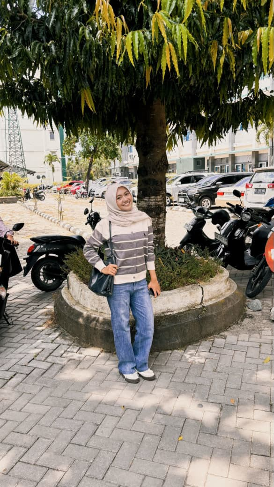

“
Katakan cinta bila kau cinta
”Awal dari sebuah rasa yang bersemi indah di hatiku
♡
Lembar demi lembar melodi kenangan dan rasa di dalam hati
Katakan cinta bila kau cinta
”Awal dari sebuah rasa yang bersemi indah di hatiku
